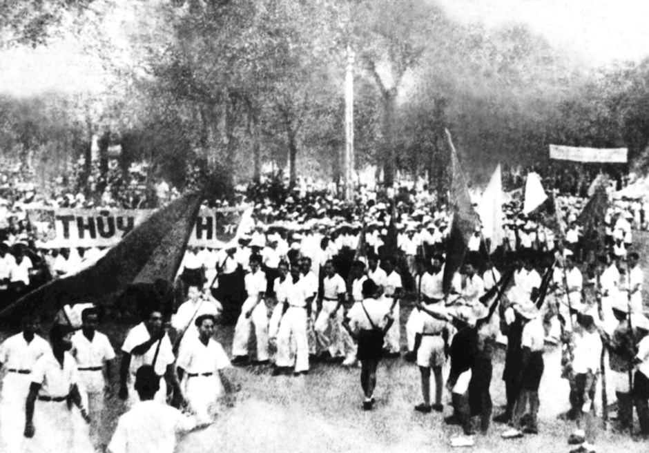
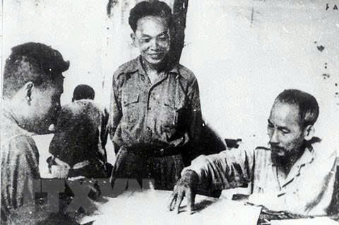
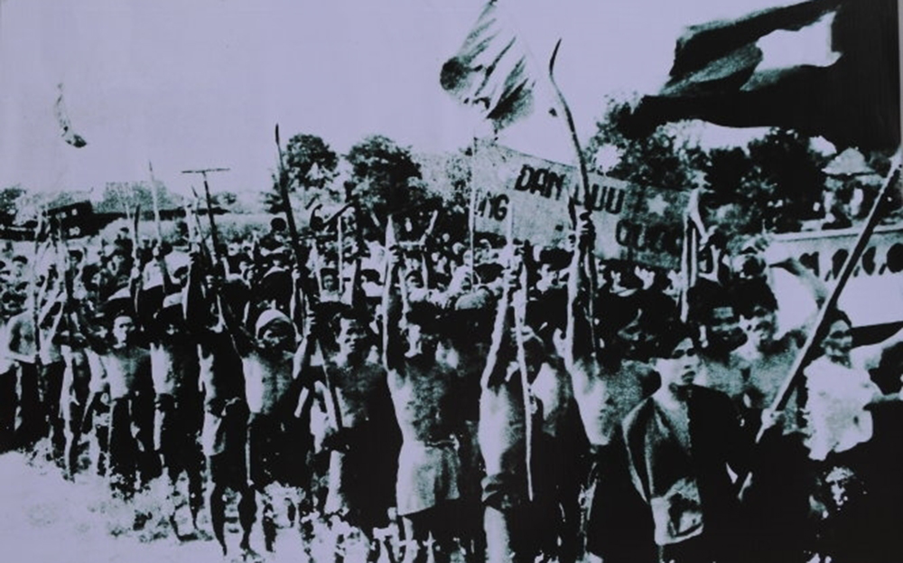
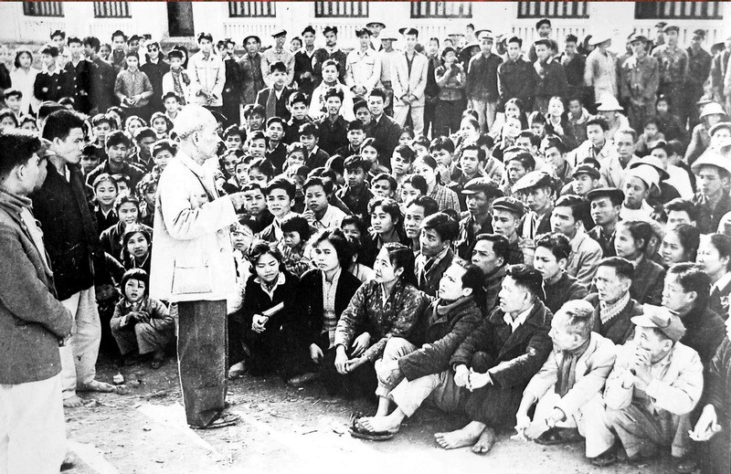

Vai trò của cá nhân, quần chúng nhân dân và lãnh tụ
"Một cá nhân có thể thay đổi tất cả?"
Mỗi con người là một thực thể độc lập với tư duy, khát vọng và năng lực riêng. Nhưng liệu một cá nhân đơn lẻ có đủ sức mạnh để viết nên lịch sử?
"Hay xã hội mới là nền tảng quyết định?"
Con người không tồn tại cô lập. Xã hội với những mối quan hệ phức tạp, những quy luật khách quan — chính là môi trường định hình mọi cá nhân.

"Quần chúng — lực lượng tạo ra lịch sử"
Theo quan điểm duy vật lịch sử, quần chúng nhân dân là chủ thể sáng tạo chân chính của lịch sử. Họ là lực lượng sản xuất cơ bản, là động lực của mọi cuộc cách mạng xã hội.
"Lãnh tụ — người định hướng"
Lãnh tụ là người có trí tuệ vượt trội, nắm bắt được quy luật khách quan, thể hiện nguyện vọng của quần chúng và có khả năng tổ chức, dẫn dắt phong trào cách mạng.

Không có quần chúng nhân dân, mọi tư tưởng đều không thể trở thành hiện thực

Quần chúng nhân dân – lực lượng quyết định
Khi lãnh tụ và quần chúng nhân dân thống nhất

Quần chúng nhân dân là chủ thể sáng tạo chân chính, là lực lượng quyết định sự phát triển của lịch sử. Lãnh tụ, với trí tuệ và tầm nhìn vượt trội, đóng vai trò định hướng và tổ chức — song không bao giờ tách rời khỏi quần chúng. Sự thống nhất biện chứng giữa quần chúng và lãnh tụ chính là động lực thúc đẩy tiến trình phát triển của lịch sử nhân loại.